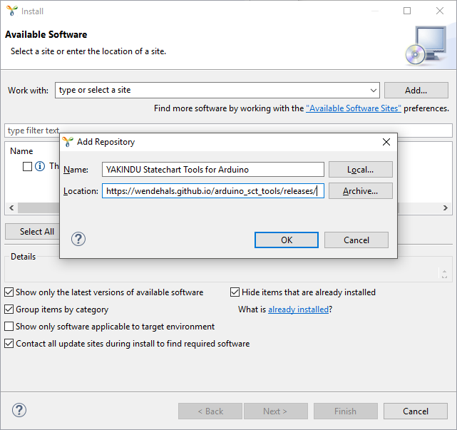

First you need to download the YAKINDU Statechart Tools. Unzip the archive to an arbitrary directory and start SCT. Choose "Install New Software..." from the "Help" menu.
Select the "Add..." button in the upper right corner to add a new update site. Copy the following URL to the "Location" text field: https://wendehals.github.io/arduino_sct_tools/releases/. Use any value for the "Name" field and select "OK".

Select YAKINDU Statechart Tools for Arduino and press the "Next>" button to switch to the next page.